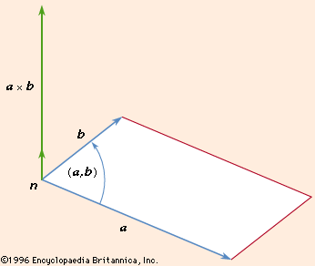

Perpendicular Vectors
Inner Product of Vectors2 vectors are perpendicular when their inner product = 0
The Inner Product aka the Dot Product(a•b) produces a real #, NOT a vector
- in a plane $(x,y)$: If $a↖{→}=(x_1,y_1)$ & $b↖{→}=(x_2,y_2)$, then $a↖{→}•b↖{→}=x_1x_2+y_1y_2$
- in space $(x,y,z)$: If $a↖{→}=(x_1,y_1,z_1)$ & $b↖{→}=(x_2,y_2,z_2)$, then $a↖{→}•b↖{→}=x_1x_2+y_1y_2+z_1z_2$
Find the inner product of $a↖{→}=(5,2,7)$ & $b↖{→}=(3,-4,-1)$
$\table a↖{→}•b↖{→}=(5)(3)+(2)(-4)+(7)(-1); a↖{→}•b↖{→}=15-8-7; a↖{→}•b↖{→}=0$
Since their inner product is 0, the are perpendicular
$\table a↖{→}•b↖{→}=(5)(3)+(2)(-4)+(7)(-1); a↖{→}•b↖{→}=15-8-7; a↖{→}•b↖{→}=0$
Since their inner product is 0, the are perpendicular
Cross Product of Vectors in Space
If $a↖{→}=(x_1,y_1,z_1)$ & $b↖{→}=(x_2,y_2,z_2)$, then
$a↖{→}xb↖{→}=i↖{→}|\table y_1, z_1; y_2, z_2|-j↖{→}|\table x_1, z_1; x_2, z_2|+k↖{→}|\table x_1, y_1; x_2, y_2|$
If $a↖{→}=(x_1,y_1,z_1)$ & $b↖{→}=(x_2,y_2,z_2)$, then
$a↖{→}xb↖{→}=i↖{→}|\table y_1, z_1; y_2, z_2|-j↖{→}|\table x_1, z_1; x_2, z_2|+k↖{→}|\table x_1, y_1; x_2, y_2|$
| This cross product is perpendicular to both $a↖{→}$ & $b↖{→}$ |  |
Find the cross product of vector a & b if...
$a↖{→}=(5,2,3)$ & $b↖{→}=(-2,5,0)$
then $\table a↖{→}xb↖{→}=i↖{→}|\table 2, 3; 5, 0|-j↖{→}|\table 5, 3; -2, 0|+k↖{→}|\table 5, 2; -2, 5|$
$\table a↖{→}xb↖{→}=-15i↖{→}-6j↖{→}+29k↖{→}; a↖{→}xb↖{→}=(-15,-6,29)$
then $\table a↖{→}xb↖{→}=i↖{→}|\table 2, 3; 5, 0|-j↖{→}|\table 5, 3; -2, 0|+k↖{→}|\table 5, 2; -2, 5|$
$\table a↖{→}xb↖{→}=-15i↖{→}-6j↖{→}+29k↖{→}; a↖{→}xb↖{→}=(-15,-6,29)$
Video